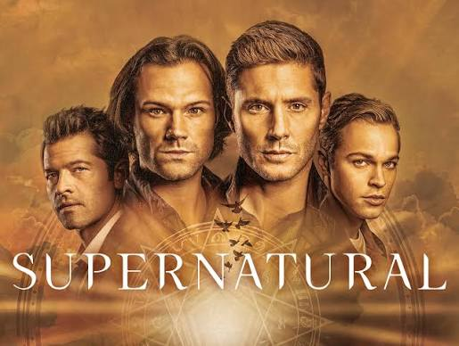
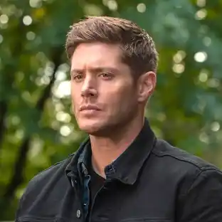
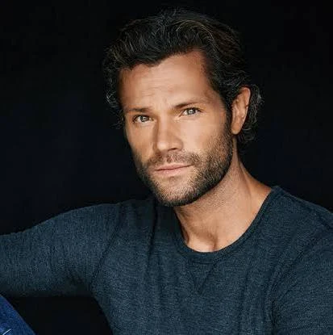
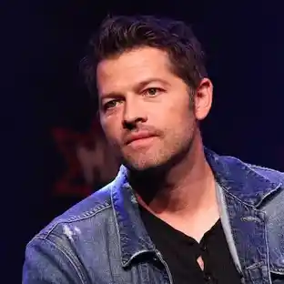
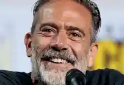
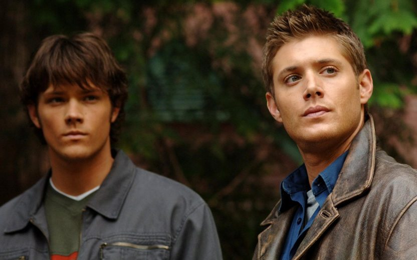
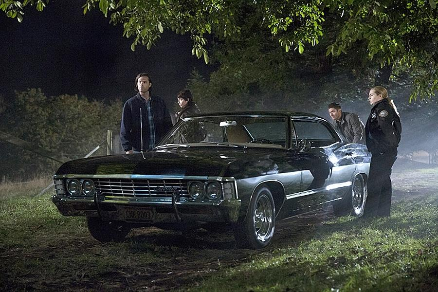

Sinopse

Sam e Dean Winchester viajam pelos Estados Unidos caçando monstros, fantasmas e demônios. Seguindo os passos de seu pai, John Winchester, os irmãos enfrentam perigos que vão muito além do que imaginavam.
Com a ajuda do anjo Castiel, eles encaram novos inimigos, traições e escolhas difíceis. Mesmo quando seus velhos truques deixam de funcionar, a união dos irmãos continua sendo sua maior força.
Trailer
Elenco


Jensen Ackles
Dean Winchester
O irmão mais velho, protetor e corajoso. Ama seu Impala e faz de tudo pela família.


Jared Padalecki
Sam Winchester
Inteligente e dedicado, usa a pesquisa e seus conhecimentos para enfrentar o sobrenatural.


Misha Collins
Castiel
Um anjo que se torna um grande aliado dos irmãos e aprende muito sobre a humanidade.


Jeffrey Dean Morgan
John Winchester
Pai de Sam e Dean. Ensina os filhos a caçar depois de uma tragédia mudar a vida da família.
Cenas marcantes
Alguns momentos que fazem parte da história dos Winchester.

O reencontro dos irmãos
No primeiro episódio, Dean procura Sam para encontrar o pai. É o começo da jornada dos dois.
A chegada de Castiel
Em Lazarus Rising, na 4ª temporada, Castiel aparece e muda o rumo da história dos Winchester.
A família reunida
Em Lebanon, na 14ª temporada, os irmãos reencontram John e dividem um jantar especial em família.
Curiosidades
- A série começou em 2005 e terminou em 2020.
- Ao todo, são 15 temporadas e 327 episódios.
- O carro dos irmãos é um Chevrolet Impala 1967, chamado de Baby por Dean.

Deixe sua opinião
Qual personagem ou cena você mais gosta?